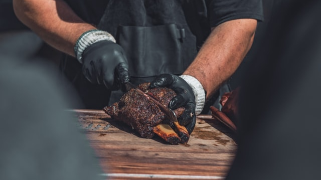

Ribs

Description
Ribs, if cooked the wrong way, can turn into a dry and tough mess of bones and meat. But done right, ribs is the tastiest meal you've ever had. So how do we do it? Well, let's explore the proper way to cook ribs in this recipe.
Ingredients
These are what you need:
- Ribs (baby backs or spares)
- Dry rub
- Your favorite BBQ sauce
- Lump charcoal or charcoal briquettes for fuel
- Wood of choice for smokey flavour (apple and oak are the best for ribs)
- Wrapping material
- Aluminum foil or
- Butcher paper
- Time
- Your loved ones and a few beers
Steps
3 2 1 method is the most reliable way to create tender, juicy, and "finger licking good" ribs. The method follows these steps below:
- Remove the ribs' membrane.
- Apply dry rub to season the ribs.
- Start your BBQ smoker. Get its temperature to about 225F to 250F.
- Throw in your wood of choices for flavour.
- Once your cooker is ready, it's time for the ribs. Cook them naked (without wrapping) for the first 3 hours.
- Remove the ribs and wrap in either foil or butcher paper. Then put the wrapped ribs back and cook for another 2 hours.
- Take a nap.
- Take the wrapped ribs out. Get rid of the wrapping. Cook them naked again for 30 minutes.
- Slather the ribs with BBQ sauce. Continue cooking for another 30 minutes to finish the last hour.
- Remove the ribs from the cooker. And let the meat rest for about 30 minutes.
- Slice and serve.
Note: For more details regarding the 3 2 1 method, please visit this website.
Back to the homepage